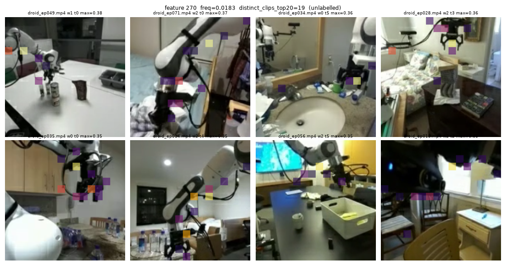

Feature 270
robot gripper / wrist (end effector and its cable)
failed: random_percentile
- random_percentile
- 40
- n_random
- 10
- ablation_effect
- 2.15865343142e-05
- real
- False
The same SAE recipe, trained on a randomly initialised V-JEPA 2 (same DROID clips, layer 16), reconstructs its activations better than the trained model's SAE does: explained variance 0.945 vs 0.824, loss_recovered 0.9999 vs 0.9795. On the random model, zeroing layer 16 lowers the loss (L_zero 0.799 vs L_clean 0.859), so its loss_recovered measures nothing, yet it still reads near 1. Only the context-mean floor check told the two apart. Explained variance and loss_recovered cannot separate a trained dictionary from a random one, so we closed this track. The random-weights SAE control is not in the tool yet.
| Trained V-JEPA 2 | Random weights | |
|---|---|---|
| Held-out explained variance | 0.824 | 0.945 |
| loss_recovered | 0.9795 | 0.9999 |
| L0 (held-out) | 32.7 | 38.4 |
| Beats the context-mean floor | True | False |
| Held-out windows scored | 24 | 12 |
Sources: demo-data/vjepa-randinit/score-trained.json (run droid100-L16-posmean) and score-randinit.json (run droid100-L16-randinit).
Attribution patching (one forward and backward pass per window, covering all 8192 latents) against measured ablation of 40 features (227 feature-windows). Spearman between |attribution| and |ablation effect|, per feature: 0.987. 9 of ablation's top 10 are in attribution's top 10.
Ranking all 8192 latents this way takes about 3,900x less compute than ablating each one (projected from measured per-window times). On only the 40 features tested the saving is 1.6x.
Caveat: ranking by edit size alone (summed activation) already gives Spearman 0.90. Attribution is a prefilter for what to ablate; it does not replace ablation. Source: demo-data/vjepa-atp/summary.json (run droid100-L16).
Opened on held-out droid_ep068.mp4 window 0. split.json marks that file heldout and droid_ep067.mp4 train.
Feature 270

The other clip in this bundle, droid_ep067.mp4, is the train split above.
Scoreboard threshold for the random-control gate is >=95 vs ~10 matched controls (so must beat all of them). Candidates at or above 95: 3574 at 100.0. real is true for no feature.
| Feature | Status | random_percentile | real |
|---|---|---|---|
| 991 | failed: random_percentile | 20 | False |
| 3446 | failed: random_percentile | 90 | False |
| 7476 | failed: random_percentile | 0 | False |
| 7563 | failed: label_holds_heldout, random_percentile | 70 | False |
| 3574 | failed: label_holds_heldout | 100 | False |
| 998 | failed: random_percentile | 30 | False |
| 3180 | failed: random_percentile | 0 | False |
| 336 | failed: random_percentile | 0 | False |
| 224 | failed: random_percentile | 90 | False |
| 270 | failed: random_percentile | 40 | False |
The random-init SAE still fires 6112 features, and random_init/candidates.json still lists 10 candidates. Nothing here is claimed real.